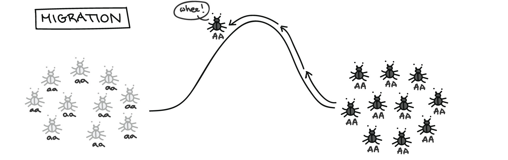
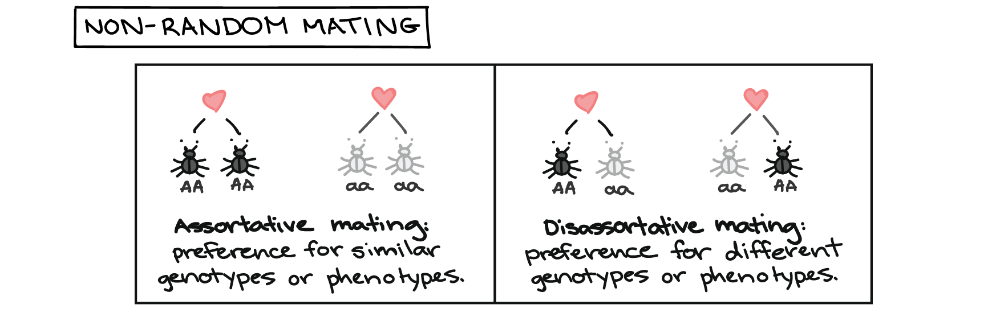

Dunn, R. R., Spiros, M. C., Kamnikar, K. R., Plemons, A. M., & Hefner, J. T. (2020). Ancestry estimation in forensic anthropology: A review. Wiley Interdisciplinary Reviews: Forensic Science, 2(4), e1369.
About
Anthropological Theory in Human Variation
This website is pedagogical tool for understanding what shapes human variation.
We are all familiar with the concept of race. If you look around, you could assign a race label to each person you see. However, if everyone in the room partakes in this same activity, there is high probability that people will be labeled as belonging to more than one race. This is because race is not biological. It is a social label printed on people based on how others perceive them. Race was created by man to establish a hierarchy, or rank, of the human race. This social hierarchy was created using phenotypic traits to draw arbitrary circles around groups of people giving the appearance that these groupings held biological truths.
It is important to first understand the difference between phenotype and genotype.
- Phenotype is an individual’s observable physical traits resulting from the interaction of their genotype with their direct environment, such as skin color or shape of the nose.
- Genotype which is an individual’s heritable genetics, or the genes that have been passed from the parents.
A Dark History
In the early 1900s, people like Earnest Hooten and Ales Hrdlichka, two of the earliest physical anthropologists, conducted research that fueled race theory in the United States. Most of Hrdlichka’s work focused on Native American migration and human variation. Hooten’s work focused on creating racial classification systems using phenotypic traits like hair color, size of the skull, and nose shape, amongst others, to label individuals as Caucasoid, Negroid, or Mongoloid. But he went further to describe behavior traits for each race to aid in criminal investigations. This has had serious implications on the legal system as it leads to the belief that people with darker skin would have a greater chance of being a criminal. In Hooten’s hierarchy, he also placed people of African descent as closely related to apes and giving them less social power than European descendants. Additionally, Hooten and Hrdlichka served on the Committee on the Negro which “focused on the anatomy of blacks and reflected the racism of the time” (AAA Statement on Race). This committee aided in progressing the eugenics movement, a movement to cleanse the human race through selective breeding by eliminating inheritance of undesirable physical, mental, or moral traits. This means that those seen as delinquents, mentally ill, or physically unfit (e.g. dwarfism) could be sterilized through various forms of medical interventions so they could not reproduce.
These dark times of America’s history have had lasting impacts on our culture, politics, and even biology.
The act of scientists dictating to the public that race is real, race is a biological truth, and that we can rank all humans based on their phenotype allowed for the U.S. government to feel justified in creating policies that favored European descendants. This led to those who were not of European descent (e.g. Africans, Native Americas, and Chinese) experienced greater rates of poverty and disease due to limited access to resources driven by policy. This culture of division led to many viewing people outside of their social race as “the other” which impacted mating practices. Traditionally, in the U.S., it is less common for people of different social races to mate and reproduce meaning there has been a low degree of genetic exchange between the groups over time. This mating practice has resulted in lasting phenotypic variation between current social race groups meaning that the original arbitrary boundaries drawn around groups of people have has lasting influence in the population genetic structures in the U.S. These practices have allowed the sociopolitical structures to continue to view social races as separate entities, thus, ensuring differential treatment between the groups.
Let us return now to the term phenotype.
Anthropologists understand that there is great phenotypic variation amongst the human race and that an individual’s phenotype is determined by their genome and their environment. The human body is a c omplex organism that can adapt and change in order to survive in its environment. This means that while all humans have the genetic material to make skin, noses, and the same physical form, they have small differences that allow them to live in their environment. For example, people living in cold climate need narrower noses than people living in warmer climates. Narrow noses slow down the rate that air is inhaled so that the body can warm the inhaled air before it reaches the lungs. If the air is too cold when it reaches the lungs, the lungs can be damaged. Because people have moved around the world throughout history, anthropologists recognize that phenotypic traits are expressed a different rates between groups and we can never say that one trait is only represented for a specific group of people or social race. This will be explained in greater detail in the Macromorphoscopic Traits module of this page.
Please explore the page to learn how climate and genetics creates human phenotypic variation.
This variation is continuous across the world and phenotypic traits can be expressed in all races. The goal is to demonstrate that while there is human variation based on population histories, there are no definitive boundaries that can assign someone to a specific group. This outdated belief that social race is rooted in biological truths has had many negative social consequences. When we understand why we see physical differences between people around us, we can see that we are all more alike than we are different and we can begin to ease racial tensions in the current sociopolitical climate.Change begins with education.
Continue to learn how climate impacts human variation & explore the helpful links below.Source: NOAA
Climate
Climate and Human Variation
The human body can respond, or adapt, to environmental stress in several ways to increase their chance of surviving, including acclimation, acclimatization, and developmental acclimatization.
- Acclimation: short-term changes that occur quickly after experiencing stress; Example: sweating to cool down the body. This response is not permanent and occurs in the person’s normal environment.
- Acclimatization: long-term changes to physiological stress, especially when the person has moved to a new environment; Example: increase in rates of metabolism, respiration, and blood circulation in hot climates.
- Developmental Acclimatization: physiological changes during growth and development that help the individual thrive in their environment; Example: larger chest sizes in people who grow up in high altitudes.
These three forms of human adaptation demonstrate plasticity, or the ability to change physiologically in response to environmental stress to increase the chance of surviving.
Anthropologists typically turn to Bergmann’s rule and Allen’s rule to teach these concepts.
- Bergmann’s Rule: Simply put, Bergmann’s rule argues that among mammals of similar shape, larger mammals will lose heat from their bodies at faster rates than smaller mammals due to more body surface. It also states that among mammals with similar size, those with linear shapes lose heat faster than those that are non-linear. This means that humans with smaller body sizes are better adapted for cold climates while larger body sizes are better adapted for hot climates.
- Allen’s Rule: This rule states that mammals in cold climates more frequently have short, bulky limbs while those in hot climates tend to have long, slender limbs. Similar to Bergmann’s rule, these patterns of human body size and shape allow for the body to regulate their body temperature where short limbs allow less heat to leave the body and long limbs increase the loss of heat.
These rules also influence the size and shape of the skull.
Anthropologists collect measurements and morphological information of the human skull to determine ancestry and study pattern of human variation as it is rich with information. Generally speaking, crania, or skulls, are wider relative to length for populations living in colder climates than those in warm climates. Again, this adaptive trait allows for the skull to release heat faster in warm climates and slow down heat loss in cold climates in order to protect the temperature of the brain and increase the chance of surviving. While this phenomenon initiated as developmental acclimatization, the trait became naturally selected over time to increase the overall crania shape and size for a population. This creates variation between groups of people.
One final notable trend in human plasticity is the shape of size of the nose.
Both, anthropological and clinical research have found evidence of the relationship between nasal size and shape and climate, specifically temperature and humidity levels. Populations in cold climates tend to have narrower noses than those in warm climates. This allows the nasal cavity time to regulate the temperature of cold inhaled air before it reaches the lungs and potentially damaging the lungs. Additionally, populations in dry climates tend to have narrower noses than those in humid climates. This again allows the nasal cavity time to regulate inhaled air using the mucous membranes.
The image in this section, taken from the National Oceanic and Atmospheric Association website, depicts the temperature difference from 1901 through 2020.
If the world temperatures continue to increase and temperatures remain higher, we will start to see changes in physical form, such as nose and cranial size and shape, to adapt to the warmer environments. We can combine this type of climate data to anthropological research to observe how and why phenotypic variation exists.
It is important to understand how climate shapes human form over time and space to grasp the continuity of human variation.
While populations may share their genetic makeup, one group may have lived in a very different environment for extended periods of time, causing significant phenotypic divergences from their ancestral lineage. Therefore, generalizing about phenotypes for large groups of people who share ancestral links without considering their environment is illogical.
Continue to the next page to learn how genetics impacts human variation.
Genetics
Genetics and Human Variation
Throughout history, humans have been highly mobile creatures. Populations have moved across the landscape, migrated to new regions of the world, and interacted with other groups of people. As they encounter other populations, they may have exchanged genes with other populations through various mating practices causing the shift in their population genetic makeup. This movement of alleles from one population to another is known as gene flow. This exchange of alleles will eventually cause the populations to become more similar genetically over time. As populations increase in size, gene flow causes an increase of variation within populations as new genes are being introduced while causing a decrease in variation between populations. 
Source: Khan Academy
Many factors can influence gene flow, such as geographic distance, geographic barriers, and nonrandom mating. It has been well documented that geographic space limits gene flow between populations because they have less of a chance of coming into contact with one another. Similarly, geographic barriers have limited gene flow in the past as people migrating on foot generally choose the most efficient way to move across the landscape. This means that landforms, such as mountain ranges and large bodies of water, will interrupt population movement and limit gene flow between groups on either side of the landform. Nonrandom mating refers to the pattern of mate choice within a population and influence genotype and phenotype frequencies. For example, the creation of social race in the U.S. made it culturally taboo to mate between races for much of our history. This has greatly influence the rate of genetic exchange between social races influencing genetic phenotypic variation within our country. 
Source: Khan Academy
Due to the vast coverage of people across the world, humans show less genetic diversity than other primates due to our increased ability to exchange genes. Other primates exists in small pockets of the world (i.e. have great geographic space between groups) and, therefore, are limited in their ability to exchange genes and the populations become more genetically diverse over time. The recent development of large genetic databases, such as the Human Genome Diversity Project (HGDP) and 1000 Genomes Project has made it possible for anthropologists to examine the relationships of population genetic structures and phenotype between populations around the world. A link to the HGDP is provided if you would like to learn more about this project.
Overall, population genetic structures are ever-changing and are influenced by many environmental and cultural factors. The rate of gene flow can change over time as culture changes. However, as the human population continues to increase, people are living closer together, and the rate of human movement increases due to improved travel, populations will become more genetically similar due to increased gene flow between groups. Given the relatively low genetic variation in the human population, people who appear to have great phenotypic variation likely are fairly similar genetically.
Continue to the next page to learn about variation in human crania.
Morphology
Cranial Morphological Variation
Forensic anthropologists use shape and size of the human skeleton to estimate ancestry of unidentified, deceased individuals.
Ancestry is one of the major clues for identifying human remains because it is one of the first ways people describe missing persons. Forensic anthropologists will build a biological profile for a set of skeletal remains to try to identify the individual. The biological profile will include age, sex, ancestry, stature, and any individualizing features, such as evidence of fractures that occurred during life or any dental work, such as fillings. The biological profile is a direct reflection of what would be incorporated into a missing person report created by law enforcement. The anthropological data can then be matched with missing persons reports to identify the skeleton as a missing person.
Ancestry can be estimated using measurements and morphological features of the skeleton and dentition.
These data are compared to worldwide reference datasets to determine the individual’s geographic origins. The problem then arises when anthropologists report ancestry and the legal system translates ancestry into social race classifications for identification. The anthropologist is bound to conform to social structures of race rather than using their more refined system that would increase the likelihood of identifying the individual. This is because geographic origins are more accurate information rather than classifying the individual as white, black, or Asian, the common 3-group framework used in the legal system.
The 3-group system is problematic because it is combines populations across large geographic space with diverse population histories into a single group.
For example, the Asian population would represent Native American, Hispanic, and mainland Asian groups. These groups have lived in very different environments and have had little to no genetic exchange between them for long periods of time and have little to no cultural affiliations. Therefore, placing these groups under a single umbrella is essentially meaningless. Furthermore, many studies have found even using the groupings Hispanics or mainland Asians comprehensively is flawed as there is great regional variation. In the climate and genetics modules of this page, you learned that language and geographic barriers impact the rate of gene flow between regions and can increase phenotypic variation within these groups.
In the past, ancestry of a skull was determined by examining a list of traits and determining whether each trait was present or absent. A list of traits for were provided for each or the 3 ancestral groups (European, African, or Asian) which assumed the traits as discrete, meaning that each trait is represented for only one group and did not overlap between the groups. We know now that cranial morphological traits are exhibited across the groups at varying rates. The frequency of these traits can be recorded for geographic origins to develop a reference database for comparing a set of unidentified skeletal remains to estimate ancestry based on the combination of traits present.
In 2009, Dr. Joseph Hefner developed a method for scoring the degree of expression of 17 morphological features in the craniofacial skeleton.
These traits are known as macromorphoscopic (MMS) traits (see below). Since the development of this method, Dr. Hefner has been working to build a worldwide reference dataset of MMS trait data to capture to range of human facial variation across the world.
Below you will find 3 maps depicting how three facial skeletal features vary across space.
These three features, known as Nasal Aperture Width (NAW), Interorbital Breadth (IOB), and Postbregamtic Depression (PBD), were selected because they are traditionally viewed as discrete African traits. The maps demonstrate how these traits vary in expression within a population that has traditionally been grouped as a single entity.
There are many language and geographic barriers in Africa that control gene flow between these regions. Additionally, there are some regions of Africa that are lush, humid, jungle environments while some regions a dry, desert environments. The variation in environments requires different phenotypic traits to increase the ability to survive.
Nasal Aperture Width
The first map depicts the frequency of wide nasal aperture width between countries. NAW is scored in the MMS method as narrow, intermediate, or wide and is scored relative to the width of the individual’s facial width. While African descendants were traditionally believed to all have wide nasal openings, only 7 of the 17 countries had at least 75% of the population with wide nasal apertures, 6 countries had between 50 and 75%, 2 had between 25 and 50%, and 2 had between 0 and 25%. Interestingly, the countries with higher frequencies are primarily adjacent to large bodies of water while those with lower frequencies are all inland. This may be a result of humidity controlling width of the nose.
Interorbital Breadth
The second map shows variation of wide interorbital breadths. IOB is scored in the MMS method as narrow, intermediate, or wide and is scored relative to the width of the individual’s facial width. Similar to NAW, interorbital breadth has traditionally been described as wide in the African population. Of the 17 countries observed, 10 have at least 75% of the population with wide interorbital breadths, 3 have between 50 and 75%, 3 have between 25 and 50%, and 1 has 25% or less. An interesting pattern to note here for future research is that those with lower frequencies cluster near the equator, meaning narrower interorbital breadths may be an adaptive trait for hot, humid climates. An alternative answer is that the overall facial skeleton is wider to increase surface area in order to release heat from the brain, causing underscoring of the interorbital breadth.
Postbregmatic Depression
The final map depicts the presence of postbregmatic depression across space. PBD is scored as either present or absent in the MMS method and is a dip in the top of the skull just behind the frontal bone, or the forehead. The cause of this depression is still somewhat debated but has traditionally been viewed as a discrete African trait. This map is particularly interesting because only 5 of the 17 countries have frequencies of at least 75% presence of a PBD, 8 have between 50 and 75%, and 4 have between 0 and 25% presence rates. This means that not only is the trait not as indicative of African ancestry as traditionally believed, but it also appears to be fairly variable within the population.
Overall, patterns of NAW, IOB, and PBD trait scores show that cranial morphological features cannot be assumed as discrete traits and the presence or absence of a trait does not equal a definitive ancestry determination.
We must take into consideration that genetics and climate across space will influence phenotypic expression and that all human phenotypes are on a continuum. Therefore, arbitrary circles cannot be drawn around groups.
Continue to the next page to read concluding remarks.
Dunn, R. R., Spiros, M. C., Kamnikar, K. R., Plemons, A. M., & Hefner, J. T. (2020). Ancestry estimation in forensic anthropology: A review. Wiley Interdisciplinary Reviews: Forensic Science, 2(4), e1369.
Conclusion
Concluding Thoughts
For many years, anthropologists have been screaming that race is not biological and that we are all one race.
Biologically, this is true. However, arguing that we are one race does a disservice in attempting to create a trajectory for racial equality. Claiming that we are one race essentially ignores the painful history and implications of the establishment of social races and discredits sentiments of those still suffering in our current sociopolitical climate.
It is important that we recognize our past and celebrate diversity rather than drawing arbitrary lines between people based on the way they look.
The long history of viewing people as the “other” based on phenotypic traits has had lasting effects in our society. All those not included within the confines of “white America” have been subjected to poverty, higher rates of disease, and higher infant mortality rates, to name a few. Governmental policies were created in the past to keep large populations of people in lower socioeconomic status in order to exploit them and/or take their resources. Those policies continue to cause inequality in our country today between people based on phenotypic variation.
However, you now know that phenotypic variation is a result of a population’s history, their genetic structure, and the climate in which they live. You also learned that the human population has relatively low genetic variation. Given that phenotypic variation is continuous and no phenotypic traits are discrete to a single population, arbitrary circles cannot and should not be drawn around groups of people based on their appearances. Thus, these historical notions of social race cannot and should not be used to create policy or play a role in our sociopolitical climate.
Contact
Contact Me